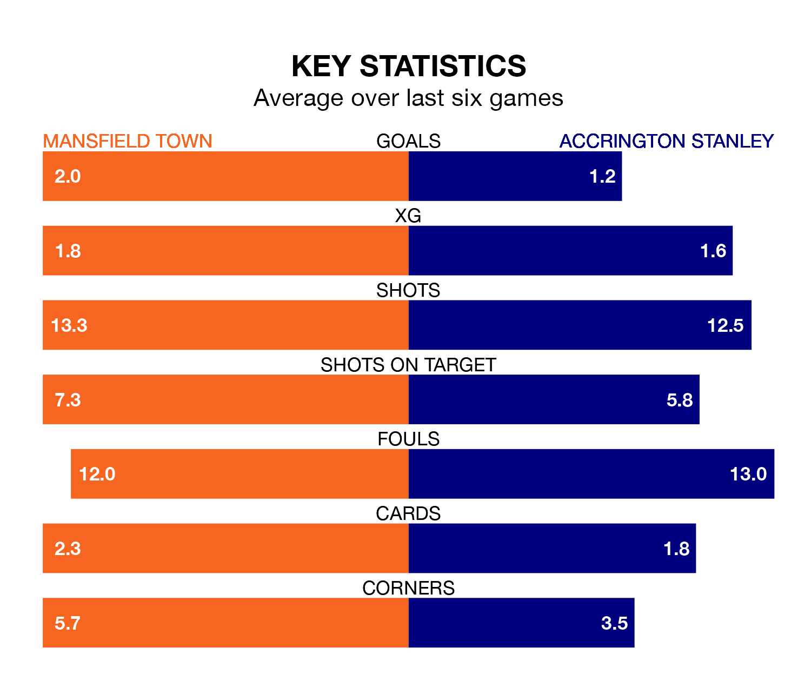

Mansfield Town are heavy favourites to keep all three points at home in Tuesday's late kick-off against Accrington Stanley.
The Stags, who sit third in EFL League Two with 43 games played, are priced at 1.4 to seal victory at the One Call Stadium.
Sitting 15 places and 25 points behind them in the table, Accrington are 6.8 to win with *Betting Company*, while the draw is at 4.6.
With 85 goals in 43 games so far this season, Mansfield are the league's third-highest scorers with 2.0 goals per game. And they are conceding fewer than average, letting in 44 goals at a rate of 1.0 per game.
Accrington, meanwhile, are below average scorers, with 1.3 goals per game, compared to a league average of 1.5. They have conceded 1.5 goals per game.
In the last 10 years, Mansfield and Accrington have played each other on eight occasions. Mansfield won two of them, Accrington four, and they drew twice.
On average, the Stags scored 2.1 goals and Accrington 1.6 in those matches.
Their last meeting was on September 9, when Mansfield won 3-0 away.
In Christy Pym, Town can rely on one of the league's safest pair of hands. He has kept 14 clean sheets in his 43 appearances this season, and only two other 'keepers – Stockport County's Ben Hinchiffe and AFC Wimbledon's Alex Bass – have been able to prevent the opposition scoring on more occasions in EFL League Two.
In Stanley's net, Radek Vítek has four clean sheets in 15 games. He has conceded a goal every 61 minutes, 50% more often than the 92 minutes between goals for Pym.
The Stags are in mixed form in EFL League Two, with three wins and a draw from their last six games.
With a win and two draws over that period, the away side's form is worse – they have taken five points from 18, compared to the hosts' 10.
Mansfield's last match was on Saturday, a 4-1 win against Milton Keynes Dons, with Davis Keillor-Dunn (two), Elliott Hewitt and James Gale getting the goals for the Stags.
Accrington lost 4-0 against Doncaster Rovers last time out, also on Saturday.
Tuesday's match will be refereed by Charles Breakspear, who has taken charge of 11 EFL League Two games so far this season, issuing two red cards and booking 48 players. He has awarded six penalties.
The last Accrington game Breakspear refereed was the 2-1 win away at Salford City on August 26. He is yet to oversee a match featuring Mansfield this season.
Updated: 11:31 (UTC), 15/04/24